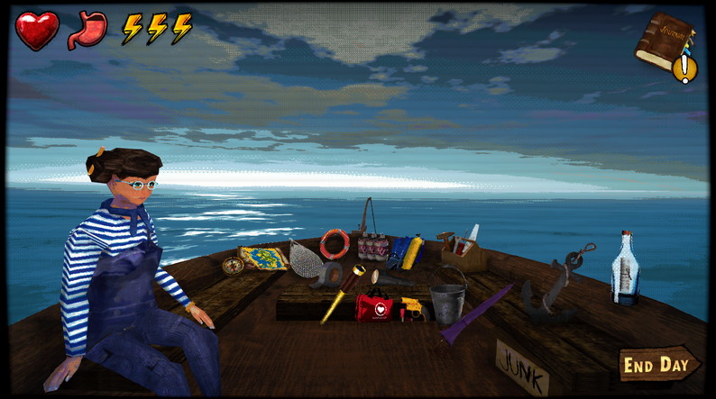

What Is Don't Sleep With The Fishes?
Don't Sleep With The Fishes is a survival horror resource-management game where you escape a sinking ship, gather supplies, choose a shipmate, and survive day by day at sea.
Every item matters. Every night can bring a dangerous event. Your choices can lead to rescue, death, hidden routes, or secret endings.
```Quick Answer
If you are new to the game, start by learning which items to bring, how to survive night events, and how endings work. The most important early guides are the endings guide, night event counters, items guide, and beginner guide.
Explore The Main Guides
All Endings Guide
Learn about rescue endings, true ending routes, bad endings, hidden outcomes, and spoiler-aware ending explanations.
Read the Endings Guide →Night Event Counters
Survive Giant Squid, Whirlpool, Eerie Melody, Eyes, Hope, Seagull, and other dangerous night events.
Read Night Event Counters →Items Guide
Compare Anchor, Flare Gun, Flashlight, Duct Tape, Bait, Fishing Rod, Bucket, and other important survival items.
Read the Items Guide →Beginner Guide
Start your first run with clear advice on ship scavenging, food, energy, repairs, shipmates, and common mistakes.
Read the Beginner Guide →Complete Walkthrough
Follow a spoiler-aware route from ship evacuation to early survival, mid-game events, and late-game rescue planning.
Read the Walkthrough →Gameplay & Ending Videos
Watch gameplay videos, ending explanations, streamer playthroughs, and visual guides for difficult events.
Watch Video Guides →
Popular Questions
How many endings are in Don't Sleep With The Fishes?
The game has multiple endings, including survival outcomes, rescue routes, bad endings, and community-reported secret routes. Visit the full endings guide for the latest known routes.
What are the best items to bring?
Anchor, Flare Gun, Flashlight, Duct Tape, Bait, and Fishing Rod are among the most valuable items because they help with rescue, food, repairs, and dangerous night events.
How do you survive the Giant Squid?
Community strategies often recommend keeping the Anchor ready. Some hidden routes may involve Heart of the Sea or Pay Debt theories, which are tracked in the full guide.
How do you get rescued?
Rescue routes usually involve signaling during Hope or Other People events with items like the Flare Gun or Flashlight. Save rescue tools instead of wasting them early.
Ready To Survive Longer?
Visit the full guide website for detailed endings, item rankings, event counters, walkthroughs, and gameplay videos.
Open Full Guide Hub →